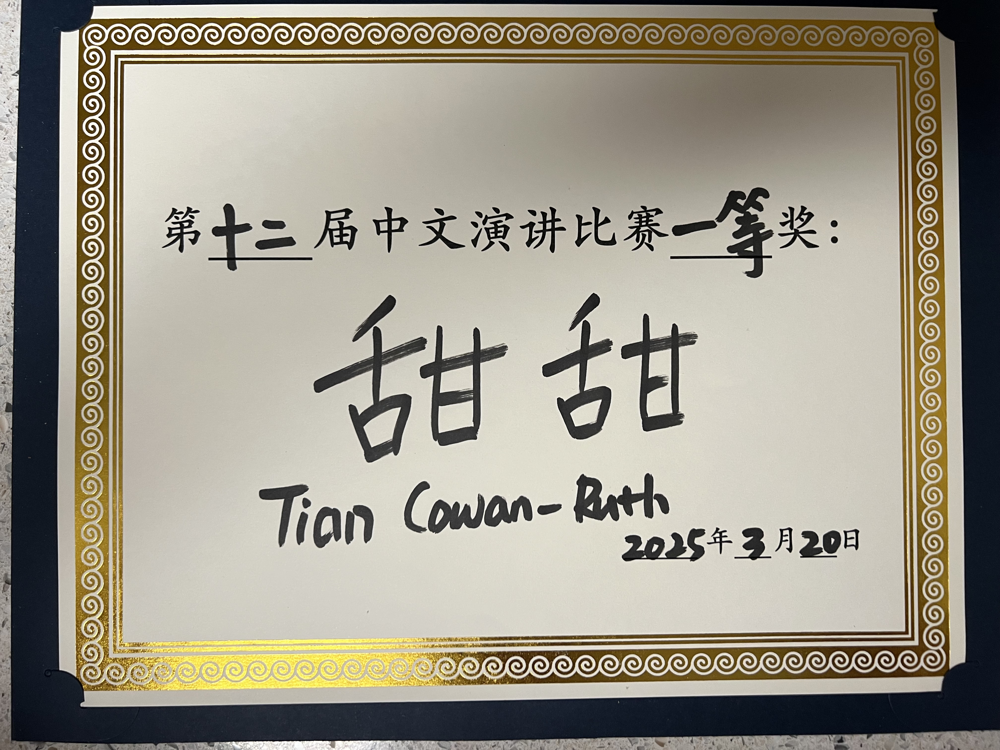

Tian Cowan-Ruth
About Me
I really like music, games, hanging out with my friend and more. Some of my current favorite artists/albums are


As for games, I play across multiple platforms. Recently I've been playing Peak with some friends, and I also finished a 1000 piece puzzle (I lost two pieces so 998 ig...)

Goals
I would love to get some kind of project management job where I can travel to Taiwan and use my Chinese minor. I really like working with other people, adapting to their different kinds of learning styles and personalities, and solving problems. I have also been learning Chinese since I was in Kindergarten am almost finished with my minor, and even won a speaking award my Sophomore year of college at CU Boulder.
